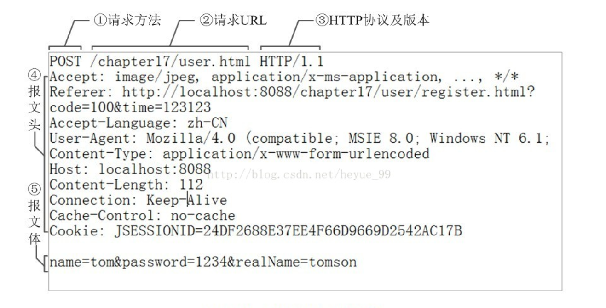
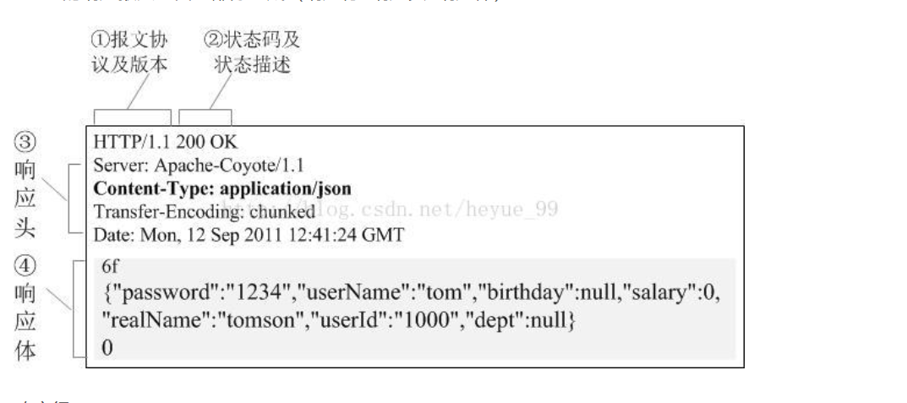
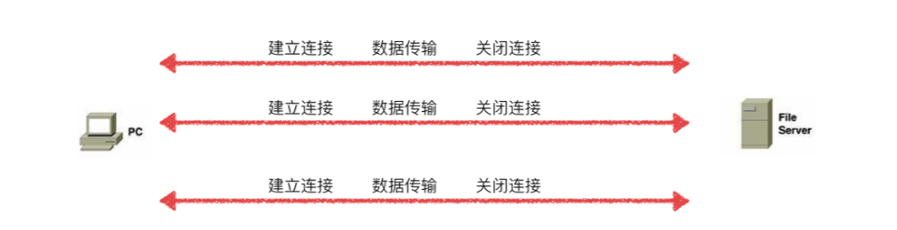
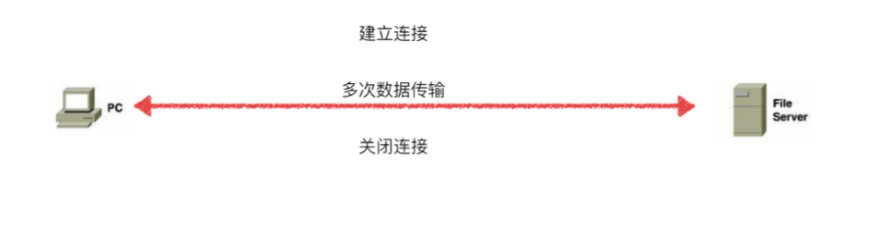
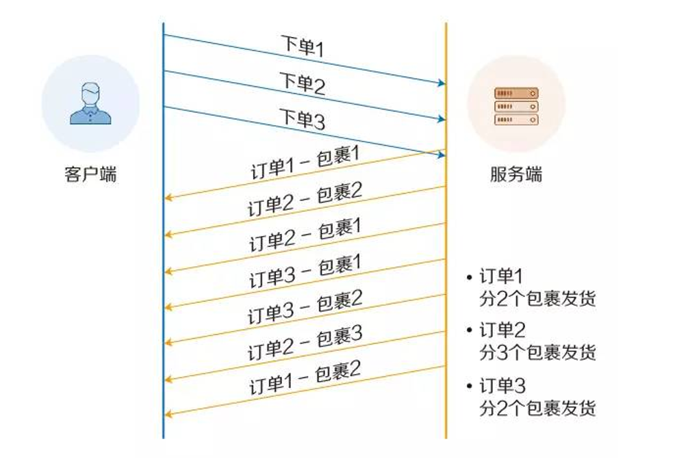
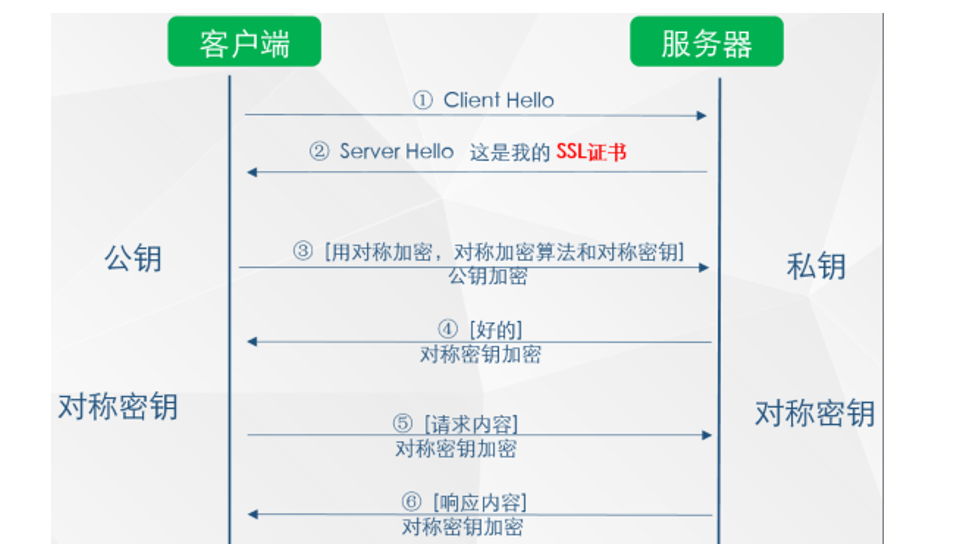

网络通信的要素
- ip地址和端口号
- 网络通信协议：udp、tcp
IP
ip地址对应java类：InetAddress
ip地址分类：
- ipv4/ipv6。ipv4由四个字节组成，四个0-255。ipv6由128位，8个无符号整数
端口
端口号表示计算机上一个程序的进程
端口分类：
- 共有端口 0-1023
- HTTP：80
- HTTPS：443
- FTP：21
- Telent：23
- 程序注册端口：1024-49151
- Tomcat：8080
- MySQL：3306
- Oracle：1521
- 动态、私有端口：49152-65535、
netstat-ano #查询所有端口号情况
netstat-ano|findstr"5900" #查看指定端口
tasklist|findstr"8696" #查看指定端口进程
通信协议
tcp/ip参考模型：
- udp协议：用户数据报协议 user datagram protocol
- tcp协议：用户传输协议 transport control protocol
tcp和udp对比
tcp 需要连接，稳定 。三次握手，四次挥手
三次挥手： 客户端发送请求连接 服务段接受请求后发送确认可以连接 客户端接受确认连接后连接服务端并发送数据四次挥手： 客户端发送断开请求 服务端接受请求发送确认可以关闭（传输数据） 服务端再次发送确认可以关闭 客户端接收到两次确认可以关闭后关闭连接
udp 不需要连接，不稳定。例如：DDOS攻击
tcp使用
- 客户端：
//服务器地址
InetAddress address = InetAddress.getByName("127.0.0.1");
//端口号
int port = 9999;
//创建socket连接
socket= new Socket(address,port);
//发送消息
os= socket.getOutputStream();
os.write("你好".getBytes());
- 服务端：
//创建地址
ServerSocket socket = new ServerSocket(9999);
//监听客户端连接
Socket accept = socket.accept();
//读取客户端的消息
InputStream is = accept.getInputStream();
ByteArrayOutputStream baos = new ByteArrayOutputStream();
//byte[] buffer = new byte[1024];
//int len ;
//while ((len = is.read())!=-1){
// String msg = new String(buffer,0,len);
// System.out.println(msg);
//}
//管道流接受消息
byte[] buffer = new byte[1024];
int len;
while ((len = is.read())!=-1){
baos.write(buffer,0,len);
}
System.out.println(baos.toString());
udp使用
//建立socket
DatagramSocket ds = new DatagramSocket()) {
//创建数据包
String msg = "你好！";
InetAddress inetAddress = InetAddress.getByName("localhost");
DatagramPacket dp = new DatagramPacket(msg.getBytes(),0,msg.getBytes().length,inetAddress,9090);
ds.send(dp);
//开放端口
DatagramSocket so = new DatagramSocket(9090);
//接受数据包
byte[] buffer = new byte[1024];
DatagramPacket datagramPacket = new DatagramPacket(buffer, 0, buffer.length);
so.receive(datagramPacket);
System.out.println(new String(datagramPacket.getData()));
什么是HTTP协议
http协议就是客户端和服务端交互的一种通讯的格式，主要让文档之间相互关联，形成超文本可以相互传阅
HTTP在计算机网络层的最上层——应用层
网站通信过程
我们在Web通信的过程中，除了HTTP协议，还需要其他协议：
- DNS：负责解析域名。访问网页时，往往是通过域名访问，而计算机通信是只认主机地址的，因此需要将域名解析成主机来进行访问
- HTTP:产生请求报文数据。在对web页面进行操作时，会产生http报文数据，请求对应的服务端进行响应
- TCP：分割HTTP数据，保证数据运输。TCP采用 三次握手保证数据的准确传输
- IP：传输数据包，找到通信目的地地址。IP协议把我们尝试的数据包发送给对方，IP地址指明了节点被分配的地址，但IP地址可能会变换， 因此使用ARP协议将IP地址反射为MAC地址.MAC地址是不会更改的，是网卡的固定地址
http是不保存状态的协议
http是无状态的，它不对通信状态进行保存，不知道通信的对方是谁，这样是为了使http更简化。
但是为了知道访问的人是谁，就有了Cookie技术了：
- 服务端想记住客户端，就会发送一个Cookie给客户端
- 客户端会把Cookie存到本地，再次访问服务器时，浏览器会自动把客户端的Cookie带过去
常用的状态码
2xx
一般是请求成功
- 200 正常处理
- 204 成功处理，但是服务器没有新数据返回，显示页面不刷新
- 206 对服务器进行范围请求，只返回一部分数据
3xx
一般表示重定向
- 301 请求的资源已分配到新的URI中，URL地址改变【永久重定向】
- 302 请求的资源临时分配到新的URI中，URL地址临时改变【临时重定向】
- 303 与302相同，但明确客户端采用GET请求资源
- 304 发送了附带请求，但不符合条件
- 307 与302相同，但不会把POST请求变成GET
4xx
表示客户端出错
- 400 请求报文语法出错
- 401需要身份认证的
- 403 没有权限访问
- 404 服务器没有这个资源
5xx
表示服务器出错
- 500 内部资源出错
- 503 服务器正忙
HTTP首部描述
http请求报文
http请求报文由方法、URI、http版本、http首部字段等部分组成

- 请求行:描述客户端的请求方式、请求的资源名称、以及使用的HTTP协议版本号
- 首部字段：描述客户端请求哪台主机、以及客户端的一些环境信息等
- 一个空行
http响应报文
http响应报文由http版本、状态码、HTTP首部字段组成

- 一个状态行：描述服务器对请求的处理结果
- 首部字段：描述服务器的基本信息、数据的描述
- 一个空行
- 实体内容：服务器向客户端回送的数据
HTTP协议版本
- HTTP1.0
- HTTP1.1
- HTTP/2
- HTTP/3
HTTP1.0和HTTP1.1区别
HTTP1.1默认是持久化连接 而HTTP1.0默认是短连接，也是就说HTTP1.0每次与服务器进行交互，都需要新开一个连接。HTTP又是基于TCP的，每次连接都要经过三次握手，四次握手，慢启动….需要消耗很多的资源

HTTP1.1建立一次连接，多次请求均有这一个连接完成（如果阻塞会开新的TCP连接）

- HTTP1.1增加了host字段
- 引入了Chunked transfer-coding，范围请求，实现断点续传
- HTTP1.1管线化理论，客户端可以同时发出多个HTTP请求，而不用一个个等待响应之后再请求（仅理论）
HTTP2和HTTP1
- 在HTTP1.0中，需要等待服务器响应才能继续发送请求
- 在HTTP1.1中，不需要等待服务器响应就可以发送，但是回送给客户端时，客户端会按照响应的顺序一一接受
- 所有HTTP1.0和HTTP1.1都会出现阻塞的情况，线头阻塞
而HTTP2解决了这一问题，实现了多路复用

- 新的二进制分帧层，定义了如何封装http消息并在客户端之间传输
- 多路复用
- 使用HPACK对头部压缩
- 服务器推送
HTTPS
对称加密：加密解密同一个密钥
非对称加密：加密用公开的密钥，解密用私钥
数字签名：验证传输的内容是对方发放的数据，且没有被篡改
数字证书：简称CA，证明是真实的服务器发送的数据
HTTPS采用的是混合加密方式
- 用户向web服务器发起一个安全连接的请求
- 服务器返回CA认证的数字证书，证书包含了服务器的公钥
- 用户拿到数字证书，用自己浏览器内置的CA证书加密得到服务器的公钥
- 用服务器的公钥加密对称加密算法的密钥，传给web服务器（不用担心被拦截）
- 服务器拿到加密的密钥，解密获取密钥，在使用对称加密算法，完成通信

因此https相对http安全，所有信息都是加密传播（防止窃听），具有校验机制（防止篡改），配备身份证书（防止冒充）
访问一个网页（完整的HTTP请求）经历的步骤
域名解析
首先浏览器会解析访问的域名对应的IP地址。查找本机是否由DNS缓存，没有则向DNS服务器发送域名解析请求。
发起TCP三次握手

- 客服端首先发送一个连接试探，ACK=0表示确认号无效，SYN=1表示这是一个连接请求或者接受报文，同时表示这个数据报不能携带数据，seq=x表示客户端自己的初始序号（seq=0就代表这是第0号包），这时候客户端进入syn_sent状态，表示客户端等待服务器的回复
- 服务器监听到连接请求报文后，如果同意建立连接，则向Client发送确认。TCP报文首部中的SYN和ACK都置1，ack=x+1表示期望收到对方下一个报文段的第一个数据字节序号是x+1,同时表明到x为止的所有数据都已经正确收到（ack=1其实是ack=0+1，也就是期望客户端的第一个包），seq=y表示服务器自己的初始序号（seq=0就代表这是服务器这边发出的第0号包），这时服务器进入syn_rcvd，表示服务器已经接收到客户端的连接请求，等待Client的确认。
- Client收到确认后还需要再次发送确认，同时携带要发送给Server的数据，ACK置1表示确认号ack=y+1有效（代表期望收到服务器的第1个包），客户端自己的需要seq=x+1（表示这就是我的第一个包，相对于第0个包来说的），一旦收到客户端的确认之后，这个TCP连接就进入Established装填，就可以发送http请求了。
TCP是一个端到端的可靠的面向连接的协议，所以HTTP基于传输层TCP协议不用担心数据传输中的各种问题。
建立TCP连接后发起http请求
发送http请求报文
服务器响应请求，返回结果
返回一个响应报文，响应的MIME类型是text/html
浏览器解析得到html标签代码
浏览器拿到index.html文件后，开始解析其中的html代码，遇到js/css/image等静态资源时，就向服务器端去请求下载（会使用多线程下载，每个浏览器的线程数不一样），这个时候就用上keep-alive特性了，建立一次HTTP连接，可以请求多个资源
浏览器对页面进行渲染并呈现给用户